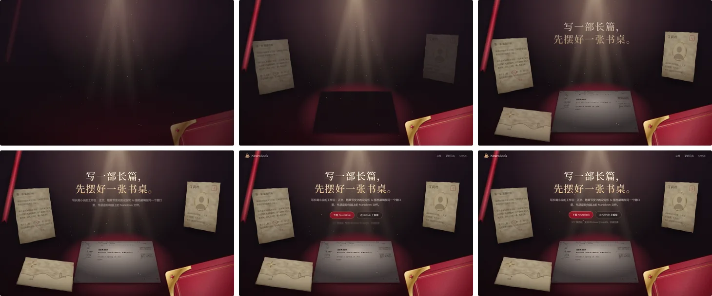
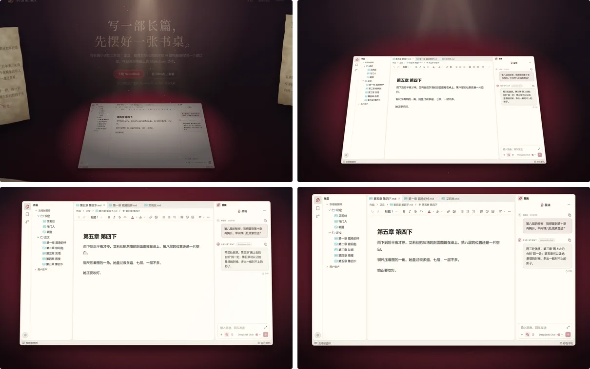
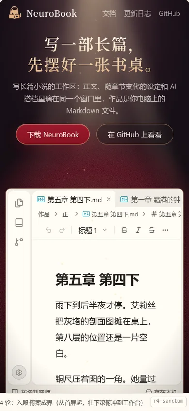
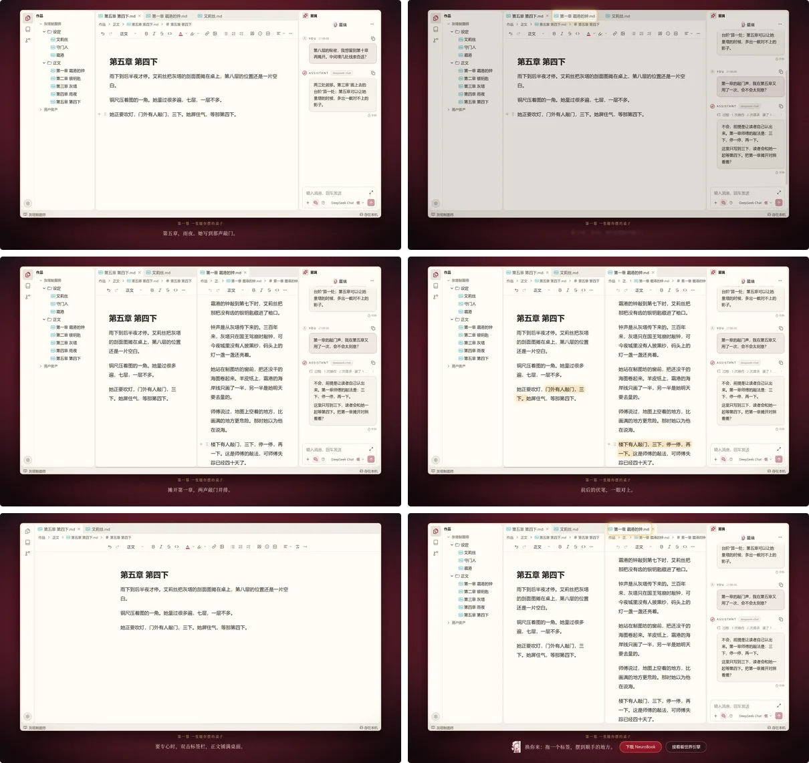

产品介绍首页：入殿·俯案成界（第 4 轮）
照 @designer 上一轮建议的方向一做了一屏半：首屏是暗夜圣案前的一幕，往下滚一屏，镜头俯冲、书页从身边掠过，远处那张桌子放平落成可以上手的真工作台；接着是改过的第一幕。做完后又请 @designer 看了一遍关键帧，下面是按它的意见改过的样子。
首屏照这个方向往下做吗？
推荐方向不变，先把首屏的材质再打磨一轮：纵深、光和俯冲接真工作台这几件事已经成立；差的是器物感，皮面、羊皮纸、鎏金现在是程序画的，下一轮换成生成的贴图（只借契约仪式的气氛），同时把第二幕的脚本写出来。
首屏终态。远处的工作台压到四成亮，首屏的主角是标题；首句用 m2，说明那一行讲清楚它是什么。
开场（慢放，左上到右下，约 2.1 秒）

暗处先起顶光，书角、丝带与三张羊皮页浮上来，远处桌布上的桌子被光点亮，最后首句、说明、按钮依次随光显出来。
往下滚一屏：俯冲落到工作台


左：滚过 16%、50%、80% 与落地。镜头跟着滚动走，滚轮一格一格跳时也是连贯地推近；落地后工作台 1:1，可以直接拖。右：窄屏不俯冲，工作台平放在首屏文字下面。
@designer 看过关键帧后改的
- 首屏把远处的工作台压暗，标题成为主角；工作台四周的细红框与小金角换成铺到画外、淡进暗里的暗红桌布，落地后工作台向桌布投一道压桌阴影。
- 顶光去掉硬边，改成柔的光锥加暖光芯，桌面上落一滩光；羊皮纸调暖，离光轴远的压暗；开场从 1.6 秒放慢到 2.1 秒；往下滚时标题只淡出，不再模糊。
- 没取：把纸纹、皮纹预先烘焙成位图（现在是 SVG 滤镜，只在挂上时算一次）；下一轮换贴图时一起解决。
第一幕这样跟着一场戏讲，其余几幕照着做吗？
推荐照着做：每一幕跟着书里的一段戏走，产品的动作都是为这段戏服务的；字幕只有两行，星璃在她自己的对话栏里说话，不另外浮气泡。

- 第一拍：第五章停在“她正要吹灯，”，接着一个字一个字打出“门外有人敲门，三下。她屏住气，等那第四下。”；作者在对话栏里问会不会太刻意，星璃读了第一章再边打边答；第一章的标签先亮一圈金，再拖着金色尾迹落到右半边，两章并排，两声敲门同时描一道金。
- 第二拍：双击标签栏，正文铺满桌面；再双击还原。
- 第三拍：交给访客。第一章的标签上一圈金环，隔一会儿往右挪一下示意能拖；字幕那一行换成星璃的小贴纸、“换你来：拖一个标签，摆到顺手的地方。”和下载、接着看世界引擎。
- 按 @designer 的意见删掉了：人物浮窗这一步（拍子太密）、“关掉再打开，桌面原样”这句（没有画面撑着）、整台推近的镜头（放大会糊字、裁掉两栏，换成局部聚光）。
首屏第一句用哪一句？
推荐“写一部长篇，先摆好一张书桌。”：这一版的画面就是俯身看一张书桌，往下滚正好落到桌上。
写一部长篇，先摆好一张书桌。
每一个世界，都从一行字开始。
从一行草稿，到一部成书。
写下第一句，世界便有了形状。
你的世界，一章一章长出来。
世界很大，从第一行写起。
已定
- 首页给搜索进来的人，做得像产品介绍；书庭这类页面另做、自由发挥（2026-11-26）
- 截图尽量少：直接把工作台复原，让人体验到拖动、分屏与布局动画的丝滑（第 1 轮）
- 第一屏把介绍说明白，同时要有高级精美的动画，让人想往下滚；往下滚进入滚动动画（第 1 轮）
- 基调取 w00050 t06 契约仪式页的史诗、神圣、西幻气氛，不复制；现有的 NovelAI 场景图不直接用（2026-11-26）
- 要讲的功能：写作与编辑器、世界引擎、剧情（在做）、星璃与 Agent、本地与开源、插件与 SDK、桌面版、模型自选；llmlint 不列（2026-11-26）
- 第 3 轮的三种开场与第一幕都不够好，请 @designer 诊断；先做它的方向一《入殿·俯案成界》一屏半，第一幕改成跟着一场戏走；材质可以用生成的贴图，首页可以用星璃的立绘与贴纸（2026-11-26）